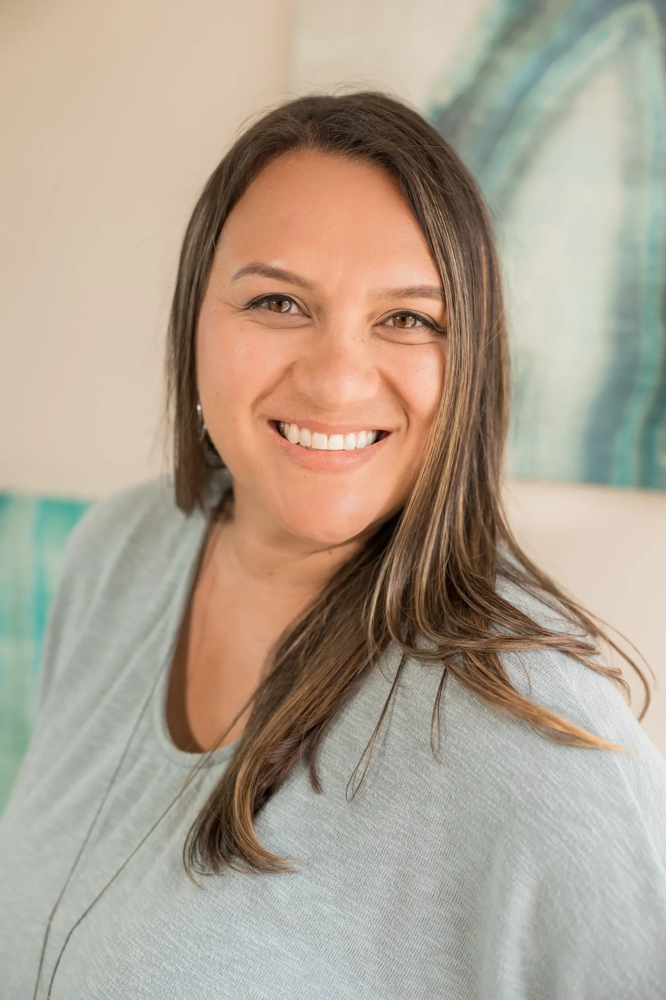
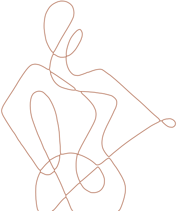
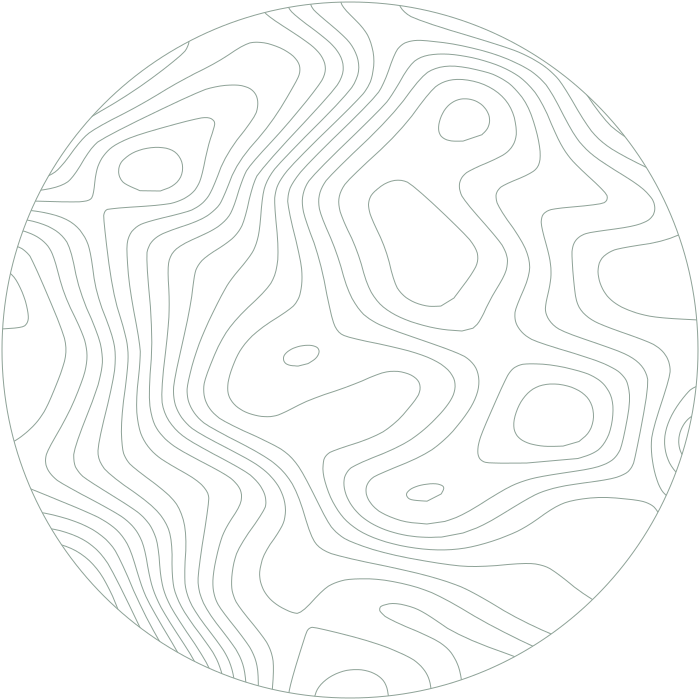
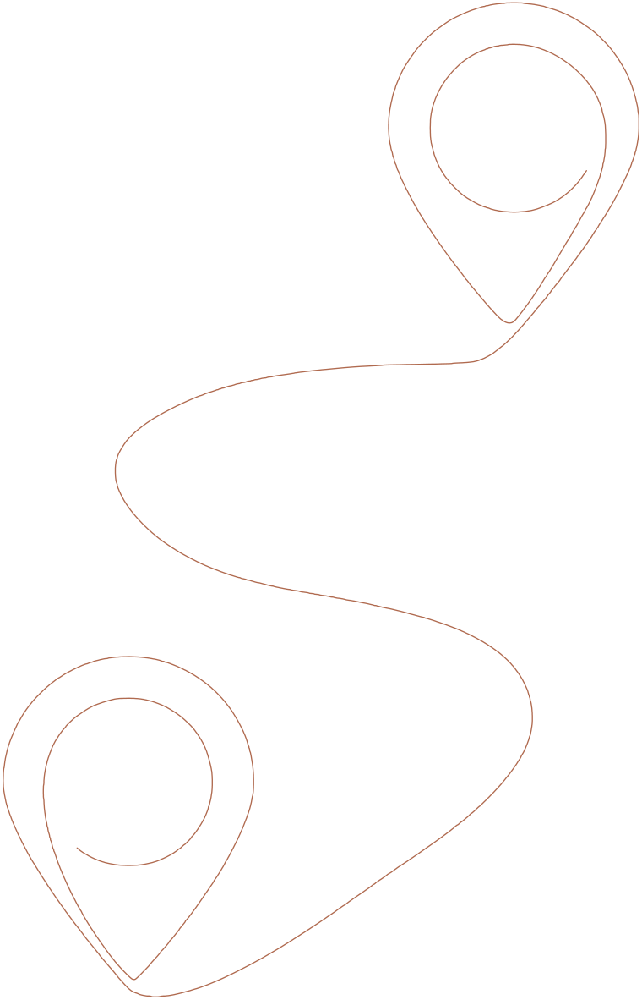
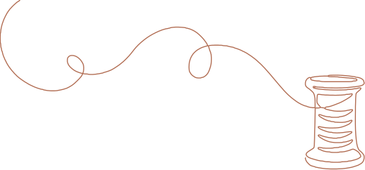
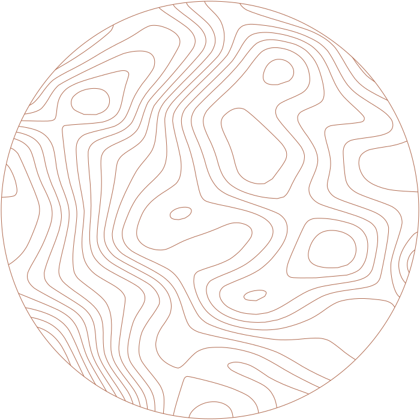

Evening sessions, Pacific time6:00 PMin San Francisco
Everyone counts on you. Privately, you're barely holding it together.
Online IFS and somatic therapy for women in San Francisco and the Bay Area who are carrying anxiety, burnout or the fallout of betrayal.
This has all become too familiar.

- You found out about an affair, a secret, or a partner who suddenly wants to open the relationship, and now you question everything you thought you knew.
- You love your partner. Staying feels like betraying yourself, and leaving means losing the life you built.
- You're successful and capable, and your mind still won't stop racing.
- You replay conversations and second-guess your own instincts.
- Even when things are going well, you can't relax. Some part of you is always waiting for the other shoe.
- There's anger, shame and grief you haven't said out loud to anyone.
You're not overreacting, and you don't have to figure it all out today. IFS and somatic therapy give those feelings somewhere to go, so you can work out what comes next with a clearer head.
Contact Kristina
Evenings, Pacific time
6:00 PM
Your session in San Francisco. It's 4:00 PM on Maui, the middle of my afternoon.
Therapy after the workday, on Pacific time.
I live and practice on Maui, two hours behind California (three in summer). When your last meeting ends or the kids are finally asleep, I'm still in the middle of my afternoon.
So evening sessions are a regular part of my week. You don't have to leave work early, or fit therapy into a lunch break, to get real time to talk.

Bay AreaYou
MauiKristina
Online therapy across California
Sessions happen by secure video, so you can be anywhere in the state. Most of my clients are in San Francisco and around the Bay.
San Francisco and the Bay AreaSan Francisco · Oakland · Berkeley · Marin County · San Mateo · Palo Alto · San Jose
And statewideSonoma County · Santa Cruz · Sacramento · Los Angeles · Santa Barbara · San Diego
Therapy for betrayal, anxiety and burnout
Most of the women I see are leaders, partners and mothers who look fine from the outside.
Betrayal and relational trauma
Affairs, hidden sexual behavior, dating apps, a partner who wants to open the relationship. We sort through the shock first, then whether to stay or go.
Betrayal and infidelity therapyAnxiety that passes for high functioning
Racing thoughts, perfectionism, people-pleasing, and the exhaustion of always being the capable one.
High-functioning anxietyMotherhood and matrescence
The identity shift nobody warned you about. Mom rage, losing track of who you were, and wanting less sex than you used to.
Therapy for mothersTherapists and clinicians
Your own therapy, with someone who knows what it costs to sit in the chair all day.
Therapy for therapistsKetamine-assisted therapy
Online sessions with oral ketamine, through Journey Clinical, for anxiety or depression that hasn't shifted with talk therapy alone.
Ketamine-assisted therapyHow we start

Book a free consult
Thirty minutes on video. It isn't a sales call. You'll leave with more clarity about what's going on, whether or not we work together.
Meet weekly
Sixty to 75 minutes online, using IFS and somatic work.
Feel it hold
Changes you notice in your body and in how you show up with the people you love. Some clients stay for ongoing support. Others come back as needed.

Hi, I'm Kristina.
I earned my master's in counseling psychology at the University of San Francisco, and I've spent years working with women in California through anxiety and relational trauma. I blend IFS, Brainspotting and somatic, attachment-based therapy, so we work with your body as well as your story.
Licensed Marriage and Family Therapist, California #LMFT133759 and Hawaii #MFT-601
IFS Level 2, IFS Institute · Ketamine-assisted therapy, Journey Clinical · Level 1 Brainspotting
There's no filter necessary with me.
From the blog
When trust is broken and anxiety takes over
Why the shock of an affair shows up in your body first, and what helps in the first weeks.
Read AnxietyWhy high-functioning anxiety doesn't go away on its own
Being good at coping is not the same as being okay. How IFS gets underneath it.
Read MotherhoodMatrescence and identity loss: why motherhood can feel like losing yourself
The identity shift nobody names, and why rage and grief can sit right next to love.
Read
Don't hold it all in anymore.
Book a free 30-minute consult, or email me if you'd rather start in writing.